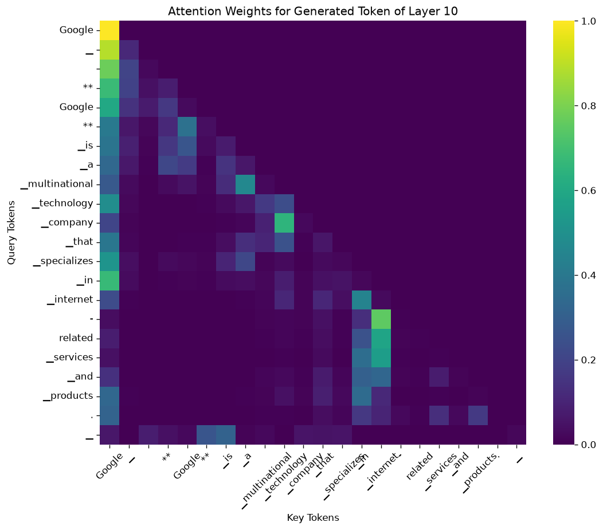
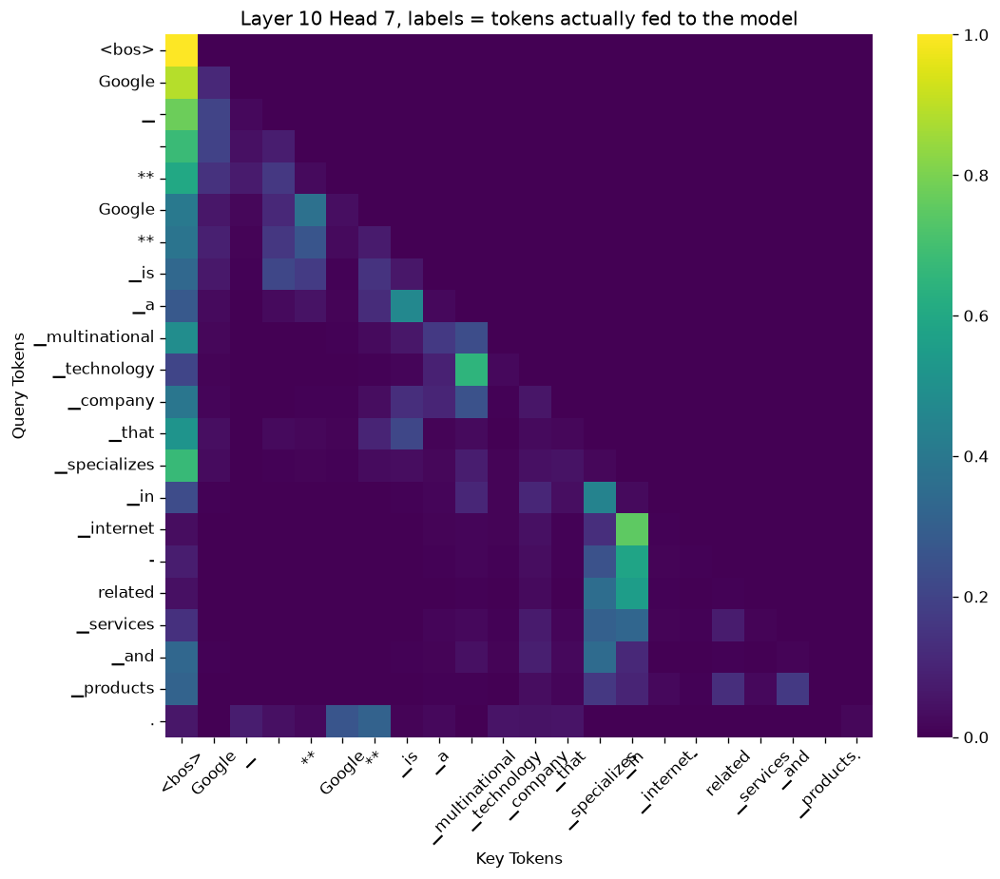
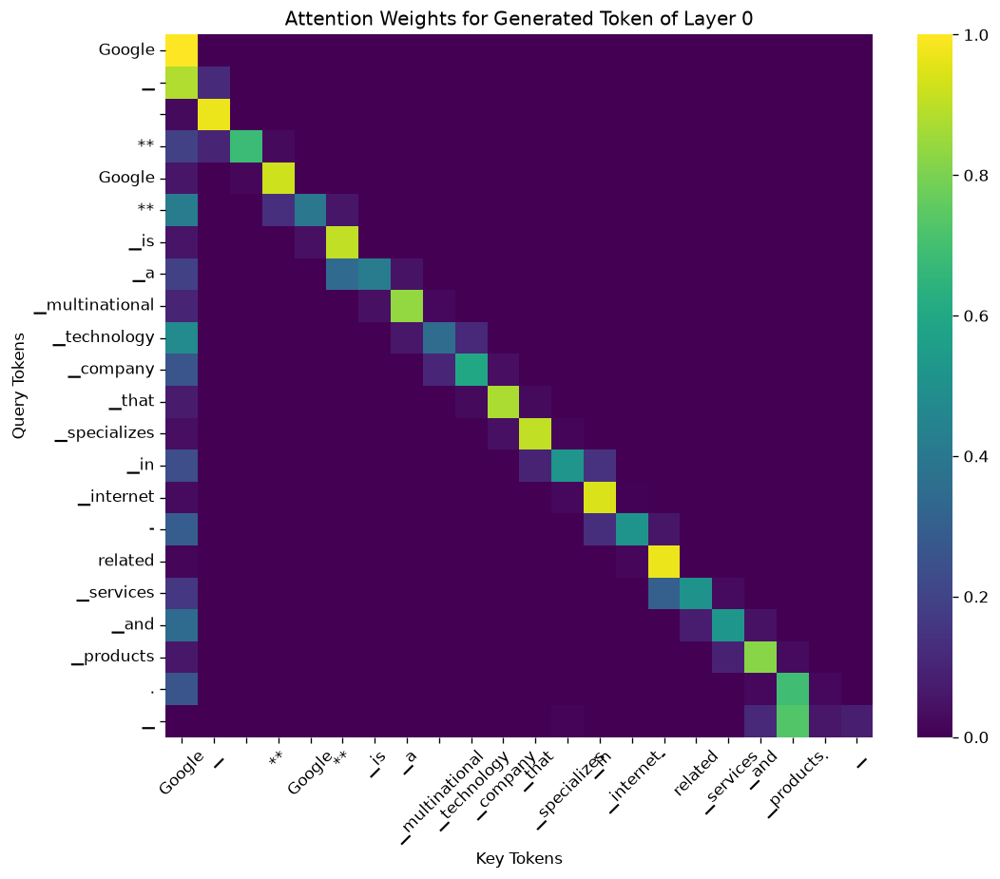
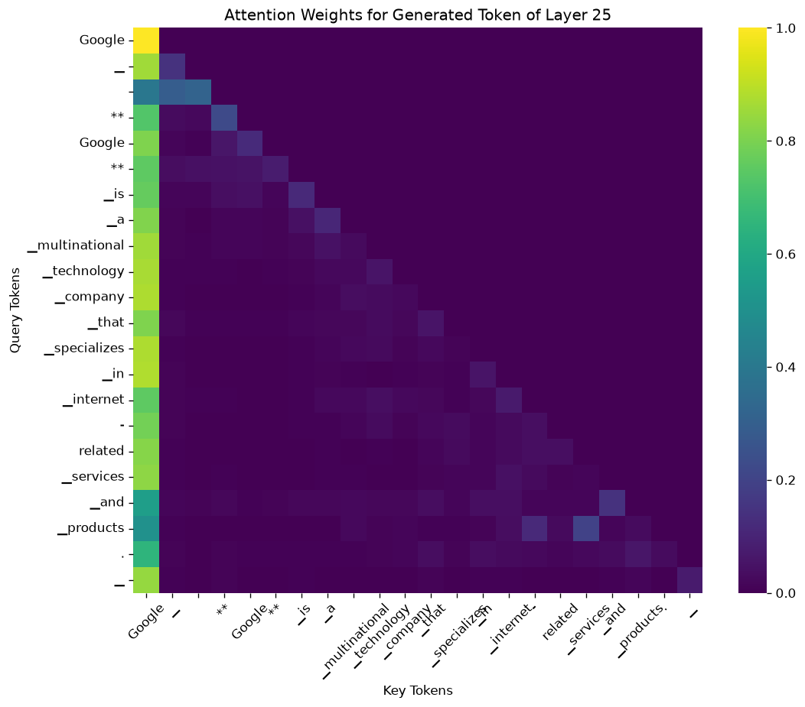

Q6 的迴圈第一步餵 3 個 token、之後每步餵 1 個，attention 依序是 3 列、1 列、1 列…，共 22 列，每列 22 欄（cache 的長度）。圖上的標籤用的是 tokenize(full_text)，比實際餵進去的 token 少一個 <bos>、多一個最後生成的 token，每一列、每一欄都錯位一格（R7）。最後一列（第 21 列）因為 sliding 層的 cache 剛好寫到最後一格、整個往前捲，把 <bos> 擠掉了，那一列的權重是錯的，其他 21 列與生成的文字不受影響（R11）。大部分層的大部分 head，注意力大量流向 <bos>（attention sink）。
- 本章對應的原始碼：hw3.py:301–309（
plot_attention）、:312–366（q6：HybridCache:324、生成迴圈 :328–358、TODO :339–344、標籤 :365）。transformers 4.47.0 的cache_utils.py（HybridCache._sliding_update，雲端從 GitHub 的v4.47.0tag 逐字核對）。 - 本章的實測來自 hw3.py 的輸出（
logs/run_seed0.txt的 Q6 段、logs/run_q6_controls.txt，與三張圖img/q6_attention_L10_H7.png、img/q6_attention_L0_H0.png、img/q6_attention_L25_H0.png），以及事實腳本docs/tools/hw03_facts.py的q6、pre_ch07段（logs/facts_q4_q7.txt、logs/facts_pre_ch07.txt）與它畫的實驗圖img/exp_q6_attention_true_labels.png。log 在docs/HW03/logs/，圖在docs/HW03/img/。 - FACTS 指本機的事實清單
docs/HW03/FACTS.md；本章引的「Q6 實測」一節的數字來自logs/facts_q4_q7.txt的 q6 段，「ch07 前置補測」一節來自logs/facts_pre_ch07.txt與logs/run_q6_controls.txt。 - KV cache、
HybridCache、mask 讓沒寫入的欄是 0、(1, 8, 3, 22) 與 22 = 20 + 3 − 1 的由來，都在補充章 K.5.1 節，這一章只回指。R7、R11 是全書大綱的問題對照表的編號；R11 是寫這一章前本機才發現的，已經補進對照表與目錄頁 2.2 節。
7.1 這一題要做什麼
投影片 p.21 用李宏毅老師課程的 self-attention 示意圖，提醒每個位置的 query 會和每個 key 算出一個權重 α′，再用它對 value 加權平均。p.22 的任務：「Plot and observe the figure of the attention map」，prompt 是 "Google "，生成 20 個 token，建議看 layer 10、head 7。p.23 的四小題都是選擇題（各 0.2 分）：兩題問「關於 sample code 產生的 attention map，哪個／哪些敘述正確」，兩題是「這個敘述是對還是錯」。敘述的內容不在投影片與 Colab 裡，本書不編；本章講清楚這張圖畫的是什麼、哪裡會誤導，並列出本機的數字，但不把任何敘述寫成標準答案（理由見目錄頁第 1 節）。
hw3.py 的 Q6 和原版 Colab 第 28 格（第 27 格是「## Q6: Observe the Attention Weight」標題）幾乎逐行相同，差別是：layer 與 head 改由 --layer-idx、--head-idx 旗標給（預設 10、7，第 0 章旗標表），圖存成 HW03/outputs/q6_attention_L{layer}_H{head}.png，plot_attention 移到 q6 外面，存 numpy 前多一個 .float()，原版在格子裡呼叫的 model.eval() 移到 load_model。另外 hw3.py 會印出生成的文字與矩陣形狀（原版只畫圖）。要拿到 attention 權重，模型必須走 eager 實作（第 0 章 0.4 節，hw3.py:55–56）。
7.2 為什麼不用 generate：自己寫的生成迴圈
model.generate 可以一次生成 20 個 token，但它只回傳結果，不會把每一步的 attention 權重交給你。Q6 要的正是每一步的權重，所以自己寫了一個迴圈：每一步呼叫一次 model(...)，拿 outputs.attentions，再自己選下一個 token、接回去。先看準備的部分：
def q6(tokenizer, model, args):
prompt = "Google "
input_ids = tokenizer(prompt, return_tensors="pt")
next_token_id = input_ids.input_ids.to(DEVICE)
attention_mask = input_ids.attention_mask.to(DEVICE)
cache_position = torch.arange(attention_mask.shape[1], device=DEVICE)
generation_tokens = 20
total_tokens = generation_tokens + next_token_id.size(1) - 1
layer_idx = args.layer_idx
head_idx = args.head_idx
kv_cache = HybridCache(config=model.config, max_batch_size=1, max_cache_len=total_tokens, device=DEVICE, dtype=DTYPE)prompt "Google " 結尾有一個空白，tokenizer 切成 <bos>、Google（12583）、▁（235248）三個 token：結尾的空白後面沒有字可以併，單獨成為 ▁（第 3 章 3.3 節）。:320 算出 cache 要 20 + 3 − 1 = 22 格，:324 自己建一個 HybridCache，cache_position 從 0、1、2 開始。這幾行每一個數字的由來，補充章 K.5.1 節逐行對照過，這裡不重講；只記住 22 這個數字，7.7 節會回來。
迴圈本體：
generated_tokens = []
attentions = None
for num_new_tokens in range(generation_tokens):
with torch.no_grad():
outputs = model(
next_token_id,
attention_mask=attention_mask,
cache_position=cache_position,
use_cache=True,
past_key_values=kv_cache,
output_attentions=True,
)
######################## TODO (Q6.1 ~ 6.4) ########################
# Get the logits for the last generated token from outputs
logits = outputs.logits[:, -1, :]
# Extract the attention scores from the model's outputs
attention_scores = outputs.attentions
###################################################################
last_layer_attention = attention_scores[layer_idx][0][head_idx].detach().float().cpu().numpy()
if num_new_tokens == 0:
attentions = last_layer_attention
else:
attentions = np.append(attentions, last_layer_attention, axis=0)
next_token_id = logits.argmax(dim=-1)
generated_tokens.append(next_token_id.item())
attention_mask = torch.cat([attention_mask, torch.ones(1, 1, device=DEVICE)], dim=-1)
next_token_id = next_token_id.unsqueeze(0)
kv_cache = outputs.past_key_values
cache_position = cache_position[-1:] + 1逐段讀：
- :330–337：
output_attentions=True讓模型把 26 層的 attention 權重都放進outputs.attentions。past_key_values=kv_cache與cache_position告訴模型「前面的 k、v 在這份 cache 裡，這次的 token 寫在第幾格」（補充章 K.4 節）。 - :339–344 是這一題的 TODO：
outputs.logits[:, -1, :]取最後一個位置的 logits（和第 2 章 2.4 節同一招），outputs.attentions取 attention。原版 Colab 第 28 格的註解附了 transformers 文件的連結，讓學生查attentions的結構：一個長度 26 的 tuple，每層一個 (batch, head, query 數, key 數) 的 tensor。 - :346：
attention_scores[layer_idx][0][head_idx]依序取第layer_idx層、第 0 句（batch 只有一句）、第head_idx個 head，剩下 (query 數, 22) 的矩陣。 - :347–350：第一步直接存下，之後每一步用
np.append(..., axis=0)接在下面，矩陣一列一列長高（下一節）。 - :352–353：
argmax選機率最高的 token，也就是 greedy。 - :355–358：準備下一步。
attention_mask多一格 1；next_token_id只剩剛選出的那一個；kv_cache接回（同一個物件，K.5.1 說過這行等於沒換）；cache_position取最後一個加 1，所以之後依序是 3、4、…、21。
這個迴圈和 model.generate 的 greedy 是不是同一回事？本機用 generate 對同一個 prompt 跑 greedy 20 個 token，得到的 id 和 Q6 迴圈生成的 20 個完全相同（logs/facts_pre_ch07.txt 第 10 行與第 14 行的 tokens identical to generate(): True）。生成的文字是（logs/run_seed0.txt 第 222–223 行，逐字）：
Generated text: 'Google \n\n**Google** is a multinational technology company that specializes in internet-related services and products. ' Attention matrix shape: (22, 22)
:360–366 把 20 個 token decode、接在 prompt 後面印出來，然後畫圖：
generated_text = tokenizer.decode(generated_tokens, skip_special_tokens=True)
full_text = prompt + generated_text
print(f"Generated text: {full_text!r}")
print(f"Attention matrix shape: {attentions.shape}")
tokens = tokenizer.tokenize(full_text)
plot_attention(attentions, tokens, f"Attention Weights for Generated Token of Layer {layer_idx}", f"q6_attention_L{layer_idx}_H{head_idx}.png"):365 的標籤是這一章第一個坑，7.4 節處理。畫圖的函式：
def plot_attention(attn_matrix, tokens, title, filename):
plt.figure(figsize=(10, 8))
sns.heatmap(attn_matrix, xticklabels=tokens, yticklabels=tokens, cmap="viridis", annot=False)
plt.xlabel("Key Tokens")
plt.ylabel("Query Tokens")
plt.title(title)
plt.xticks(rotation=45)
plt.yticks(rotation=0)
save_fig(filename)sns.heatmap 把矩陣畫成方格，顏色深淺代表數值（viridis 調色盤：0 是深紫、1 是亮黃；annot=False 表示不在格子裡印數字），x 軸是 key（被注意的 token）、y 軸是 query（正在注意的 token）。同一份 tokens 同時當成列與欄的標籤。注意圖的標題只寫 layer，沒有寫 head。
7.3 矩陣怎麼一列一列長出來
每一步 attention_scores[layer_idx][0][head_idx] 的形狀（FACTS「Q6 實測」）：
- 第 0 步：一次餵 3 個 token（prefill），所以有 3 列 query，形狀 (3, 22)。
- 第 1–19 步：每步只餵 1 個 token（decode），形狀 (1, 22)。
- 第 20 個生成的 token（最後一步選出來的
▁）不會再餵回模型，所以沒有它的列。
合計 3 + 19 = 22 列。每一列都是 22 欄：attention 的寬度是 cache 的長度，不是「到目前為止有幾個 token」；還沒寫入 cache 的欄被 mask 掉，權重是 0（補充章 K.5 節）。本機量到矩陣上三角的最大值是 0.0，每列加總在 0.99970 到 1.00026 之間（fp16 誤差）。
7.4 標籤錯位一格（R7）
矩陣的 22 列，依序是實際餵進模型的 22 個 token：prompt 的 <bos>、Google、▁，加上前 19 個生成的 token。標籤卻是 :365 的 tokenizer.tokenize(full_text)：full_text 是 prompt 加上全部 20 個生成的 token 的文字，重新切一次。本機印出的 22 個標籤（logs/facts_pre_ch07.txt 第 8 行，repr）與矩陣真正的 22 列（同一份 log 第 11 行）：
matrix from hw3.q6: shape (22, 22); 22 tick labels (repr): ['Google', '▁', '\n\n', '**', 'Google', '**', '▁is', '▁a', '▁multinational', '▁technology', '▁company', '▁that', '▁specializes', '▁in', '▁internet', '-', 'related', '▁services', '▁and', '▁products', '.', '▁'] rows of the q6 matrix = these 22 tokens: ['<bos>', 'Google', '▁', '\n\n', '**', 'Google', '**', '▁is', '▁a', '▁multinational', '▁technology', '▁company', '▁that', '▁specializes', '▁in', '▁internet', '-', 'related', '▁services', '▁and', '▁products', '.']
兩串都是 22 個，長度剛好對上，所以程式不會報錯；但內容差一格：
- 標籤少了
<bos>：tokenize只切文字，不加特殊 token（第 3 章 3.2.1 節）。 - 標籤多了最後一個
▁：它是第 20 個生成的 token，有出現在文字裡，但從來沒有餵回模型、沒有自己的列（7.3 節）。
結果每一列、每一欄的標籤都往前錯一格：圖上標成「Google」的第 0 列其實是 <bos>，標成「▁」的第 1 列其實是 Google……標成「▁」的最後一列其實是 .。欄也一樣。這個錯位對 hw3.py 的每一張 Q6 圖都成立，不管看哪一層、哪一個 head。
標籤 list 的第 2 個（從 0 數）是 '\n\n'（兩個換行），seaborn 把它畫成刻度時看起來是一片空白。所以圖上 y 軸從上數第 3 個刻度是空的，x 軸從左數第 3 個刻度也沒有字。
本機用同一個矩陣、把標籤換成實際餵進去的 token，重畫了一張（事實腳本畫的實驗圖）。兩張並排：

q6_attention_L10_H7.png（layer 10、head 7）。標籤錯位一格：y 軸最上面的「Google」其實是 <bos>，第 3 個刻度（'\n\n'）畫成空白。最後一列是 R11 算錯的那一列。
img/exp_q6_attention_true_labels.png）。標題寫「labels = tokens actually fed to the model」。矩陣本身和 hw3.py 的相同，所以最後一列（標成「.」）一樣是 R11 算錯的那一列。對照兩張圖，最上面那一列的亮點在第 0 欄、值是 1.0：hw3.py 的圖看起來是「Google 注意 Google」，實際是 <bos> 注意自己（第一個 token 只能看自己，權重必然是 1）。讀 R7 的修法在 7.8 節。
7.5 layer 10 head 7 在看什麼
以下都用實際的 token 稱呼列與欄（也就是圖 7.3 的標籤）。FACTS「Q6 實測」記錄了 hw3.py 矩陣每一列分給第 0 欄 <bos> 的比例，第 0 到第 21 列依序是：
最後一個 0.059 是 R11 算錯的第 21 列；本機用「一次 forward」（把同樣的 22 個 token 一次全部送進模型，不經過逐步生成與自己配的 cache，7.7 節）算出的正確值是 0.4929（7.7 節）。第 1 列以後的平均，hw3.py 的矩陣是 0.3733，一次 forward 是 0.3941（logs/facts_pre_ch07.txt 第 13 行；FACTS「Q6 實測」寫的 0.373 就是前者，含錯的第 21 列）。從這串數字可以讀出：
- 前面幾個 token 大量看
<bos>：Google0.89、▁0.777、\n\n0.678，越往後越少。 - 中後段的 token 比較少看
<bos>：▁internet、-、related這三列只有 0.03–0.08。
不看 <bos> 的時候看哪裡？FACTS 記錄的每列最大值所在的欄是：0, 0, 0, 0, 0, 0, 0, 0, 7, 0, 9, 0, 0, 0, 13, 14, 14, 14, 14, 13, 0, 6（最後一個 6 同樣來自錯的第 21 列）。大部分是 0（<bos>），例外是：
- 第 8 列
▁a最看第 7 欄▁is；第 10 列▁technology最看第 9 欄▁multinational：都是前一個字。 - 第 14 列
▁in最看第 13 欄▁specializes；第 15–18 列▁internet、-、related、▁services都最看第 14 欄▁in；第 19 列▁and又回到第 13 欄▁specializes。「specializes in」之後的整段「internet-related services and」，都在回頭看引出它們的「specializes in」（這是本書對數字的描述；這個 head 為什麼這樣，本機沒有分析）。
對角線（每個 token 看自己）的平均只有 0.084（FACTS，含第 21 列）：這個 head 很少看自己。
7.5.1 對照組：layer 0 head 0 與 layer 25 head 0
同一句話換一層、一個 head，圖完全不同。本機用旗標跑了兩個對照組（logs/run_q6_controls.txt，生成的文字與預設相同，矩陣同樣是 (22, 22)）：
.venv/bin/python HW03/hw3.py --q 6 --layer-idx 0 --head-idx 0 .venv/bin/python HW03/hw3.py --q 6 --layer-idx 25 --head-idx 0

q6_attention_L0_H0.png（layer 0、head 0；標籤同樣錯位一格）。亮點沿著「對角線往左一格」排成一條斜線：每個 token 最看前一個 token。layer 0 head 0：每列最注意的欄依序是 0, 0, 1, 2, 3, 0, 5, 6, …（FACTS），大多數列都是第 i 列最看第 i − 1 欄，前一個 token（例外如第 5 列、第二次出現的 Google，最看第 0 欄 <bos>）。這種 head 叫 previous-token head，常在很淺的層出現（推論，本機只看了這一個 head）。它對 <bos> 的平均只有 0.198（FACTS；這個平均是 hw3.py 矩陣算的，含第 21 列）。圖上的最後一列，最亮的格子落在倒數第 3 欄而不是倒數第 2 欄：layer 0 是 sliding 層，這正是 R11 的捲動造成的，7.7 節解釋。

q6_attention_L25_H0.png（layer 25、head 0；標籤同樣錯位一格）。左邊第 0 欄從上到下都很亮，其他欄幾乎全暗。layer 25 head 0（最後一層，global 層）：每一列最注意的都是第 0 欄，平均 0.763（FACTS，同樣是 hw3.py 的矩陣，含第 21 列）。layer 25 是 global 層，它自己的 cache 不會捲動，第 21 列的第 0 欄仍然是 <bos>；但那一列的權重同樣不可靠，原因見 7.7 節。這個 head 幾乎什麼都不看，只看 <bos>。
7.6 attention sink：大家都看 <bos>
三張圖都有一個共同點：第 0 欄 <bos> 分到大量的注意力，而 <bos> 本身沒有任何語意（它只是「序列從這裡開始」的記號）。這不是這三個 head 的巧合。本機另外把句子 "Google is a multinational technology company" 一次 forward，算出每一層 8 個 head 平均起來、第 1 列以後分給 <bos> 的比例（FACTS「Q6 實測」；一次 forward，不受 R11 影響）：
| layer | 0 | 1 | 2 | 3 | 4 | 5 | 6 | 7 | 8 | 9 | 10 | 11 | 12 |
|---|---|---|---|---|---|---|---|---|---|---|---|---|---|
| 對 <bos> | 0.57 | 0.78 | 0.62 | 0.62 | 0.57 | 0.55 | 0.66 | 0.63 | 0.63 | 0.63 | 0.57 | 0.55 | 0.53 |
| layer | 13 | 14 | 15 | 16 | 17 | 18 | 19 | 20 | 21 | 22 | 23 | 24 | 25 |
| 對 <bos> | 0.63 | 0.61 | 0.6 | 0.6 | 0.69 | 0.79 | 0.7 | 0.75 | 0.72 | 0.91 | 0.76 | 0.66 | 0.61 |
每一層都有一半以上（0.53–0.91）的注意力流向 <bos>。layer 10 的 8 個 head 各自是 0.38、0.2、0.69、0.76、0.56、0.88、0.53、0.56：head 7 的 0.56 在中間，head 1 只有 0.2。這種「大量注意力流向第一個 token」的現象叫 attention sink，Xiao et al. 2023 為它取了這個名字（見延伸閱讀）。他們的解釋是：softmax 讓每一列的權重加總必須是 1，當某個 query 沒有特別需要看的東西時，多出來的注意力總得放在某個地方，而序列最前面、所有後面的 token 都看得到的那個位置就成了「垃圾桶」。這是他們的說法，本機只量到現象，沒有驗證成因。
和本書前面量到的另外兩件事放在一起看：
- 第 0 章 0.9 節：
<bos>的 hidden state 範數，從第 5 層起大約是其他 token 的 10 倍。 - 第 6 章 6.3.1 節：pad 那一列所有的 key 都被遮掉時，softmax 只能平均分配，每個位置 1/9。那是「沒有地方可放」的極端情況；attention sink 是「有地方可放，但選擇放在
<bos>」。
範數特別大、又被大量注意，這兩件事和第 8 章會看到的「<bos> 的 SAE activation 特別大」，可能是同一個現象的不同面向。這是推論，本機沒有證明三者的因果關係。
最後補一點 sliding 與 global：Gemma 2 的偶數層是 sliding window 層（每個 token 最多往前看 4096 個位置），奇數層是 global 層（第 0 章 0.6.2 節、Gemma 補充章 G.5 節）。Q6 的序列只有 22 個 token，遠短於 4096，所以兩種層在注意力的範圍上沒有差別，都看得到全部。layer 10 是 sliding 層、layer 25 是 global 層，兩張圖的差異不是視窗造成的。但兩種層的 cache 管理方式不同（補充章 K.6 節），R11 就發生在 sliding 層的 cache 上。
7.7 最後一列為什麼是錯的（R11）
這是寫這一章前，本機把 Q6 的矩陣和「同樣 22 個 token 一次 forward」的結果逐列比對時才發現的。照理說，逐步用 cache 生成與一次 forward 整段，attention 權重只會有 fp16 的微差。實測（logs/facts_pre_ch07.txt 第 15–16 行；「差」是同一層 8 個 head、那一列每一格的權重絕對差取最大值）：第 0–20 列每一層最多差 0.004，第 21 列每一層都差很多：sliding 層（偶數層）0.53–0.94，global 層（奇數層）0.07–0.34。layer 10 head 7 的第 21 列，一次 forward 分給 <bos> 0.4929，hw3.py 的矩陣只有 0.0594，最大值所在的欄也不同。
7.7.1 原因：sliding cache 在最後一格往前捲
Gemma 2 的 HybridCache 對 sliding 層和 global 層用不同的寫入方式：global 層用 _static_update，直接寫進 cache_position 指定的格子；sliding 層用 _sliding_update。後者的關鍵幾行（transformers 4.47.0，cache_utils.py:1675–1690，逐字；k_out、v_out 是傳進來的、這一層目前的 key、value cache，key_states、value_states 是這一步新算出的 k、v；最後四行把結果寫回 cache，註解提到的 compile 是 PyTorch 把程式編譯加速的功能，和這裡的邏輯無關）：
slicing = torch.ones(max_cache_len, dtype=torch.long, device=value_states.device).cumsum(0)
cache_position = cache_position.clamp(0, max_cache_len - 1)
to_shift = cache_position >= max_cache_len - 1
indices = (slicing + to_shift[-1].int() - 1) % max_cache_len
k_out = k_out[:, :, indices]
v_out = v_out[:, :, indices]
k_out[:, :, cache_position] = key_states
v_out[:, :, cache_position] = value_states
# `_.zero()` followed by `+=` is equivalent `=`, but compile-friendly (without graph breaks due to assignment)
self.key_cache[layer_idx].zero_()
self.value_cache[layer_idx].zero_()
self.key_cache[layer_idx] += k_out
self.value_cache[layer_idx] += v_out
return k_out, v_out
用 Q6 的數字代進去。sliding 層的 cache 長度是 min(4096, 22) = 22（cache_utils.py:1643–1648），所以 max_cache_len = 22：
slicing是 [1, 2, …, 22]。- 前 19 步：
cache_position最大是 20，to_shift是 False，indices= [0, 1, …, 21]，原樣不動，新的 k、v 寫進cache_position那一格。 - 最後一步（產生第 21 列的那一步）：
cache_position= 21 =max_cache_len − 1，:1677 的to_shift變成 True，indices= [1, 2, …, 21, 0]。:1679–1680 用它重排 cache：每一格換成原本右邊那一格的內容：第 0–19 格變成原本的第 1–20 格（Google 到 ▁products），第 20 格拿到原本空著的第 21 格，第 0 格的<bos>被移到第 21 格；接著 :1682–1683 把新 token 的 k、v 寫進第 21 格，蓋掉它。<bos>就這樣從 cache 裡消失了。
cache_utils.py:1675–1683 與 Q6 的數字推出；本機量到的是捲動造成的結果）。捲動前第 21 格是空的；捲動後第 0–19 格是 Google 到 ▁products，第 20 格拿到原本第 21 格的內容，也就是空的，第 21 格寫入新 token。圖中只畫出頭尾幾格。這一捲有兩個後果：
- 最後一步看不到
<bos>：這一步的 query（.）在 sliding 層看到的是 Google 到 ▁products、一格全是 0 的空格（這一步 22 欄都沒有被 mask，所以空格也分得到一點權重，推論），以及它自己。前面 7.6 節看到，大部分 head 有一半以上的注意力放在<bos>；它不見了，那些注意力只好重新分配到別的 token 上，權重整個變了。 - 欄的意義也錯開了（sliding 層）：捲動之後，第 0–19 欄裝的是第 1–20 個 token，第 20 欄是空格，第 21 欄才是新 token 自己。所以第 21 列的第 0 欄不是
<bos>，而是Google（依原始碼推出）。圖 7.4 的 layer 0 head 0 正好看得出來：每一列最亮的都是前一個 token，第 21 列（.）的前一個 token 是▁products，本來在第 20 欄，捲動後跑到第 19 欄，所以圖上最後一列的亮點往左偏了一格（本書從圖上看出，與原始碼推出的一致）。
global 層用 _static_update，自己的 cache 沒有捲；但 global 層的第 21 列也不同（0.07–0.34）。原因是同一步裡，前面的 sliding 層已經因為看不到 <bos> 而算出不同的輸出，往後傳的 hidden state 變了，global 層這一步的 query、以及新 token 自己寫進第 21 格的 key 與 value 跟著變。前面 21 格的 key、value 是之前各步寫進去的，沒有變，欄的意義也沒有錯開：global 層第 21 列的第 0 欄仍然是 <bos>，只是 query 變了，權重跟著變。所以「欄位錯開一格」只發生在 sliding 層（偶數層）；「第 21 列的權重不對」則是每一層都有。
7.7.2 怎麼驗證，影響多大
本機做了三個對照（logs/facts_pre_ch07.txt）：
- 照抄 hw3.py 的迴圈：生成的 token 與
generate相同，layer 10 head 7 的矩陣與hw3.q6畫的逐元素相同（第 14 行）。所以比對的對象就是 hw3.py 的矩陣。 - 逐步迴圈配 22 格 cache（和 hw3.py 一樣），和一次 forward 比：只有第 21 列差超過 0.01（第 15–16 行，每層的差列在那裡）。
- 同一個迴圈改配 23 格（多一格）：22 列全部吻合，每層最多差 0.004（第 17–18 行）。多一格，最後一步寫在第 21 格 < 23 − 1，就不會觸發捲動。
影響的範圍：
- 只有第 21 列錯，也就是第 20 個 token 被選出來的那一步的 attention。其他 21 列與一次 forward 一致，熱圖的其他部分可以照常讀。
- 生成的文字不受影響：Q6 生成的 20 個 token 和
generate完全相同（generate自己配 prompt + max_new_tokens = 3 + 20 = 23 格，不會觸發）。最後一步算出的 logits 理論上也受影響，但本機這一次選出的第 20 個 token（▁）和generate相同。 - 其他題目不受影響：Q1 的 cache 是 32 + 512 = 544 格，最後一次 forward 寫在第 542 格，不到 543（FACTS「ch07 前置補測」）；Q2、Q4 用的也是
generate。 - 原版也有：原版 Colab 第 28 格是同樣的寫法（
total_tokens = generation_tokens + next_token_id.size(1) - 1、HybridCache(..., max_cache_len=total_tokens, ...)）。 - 既有的數字：FACTS「Q6 實測」的 layer 10 head 7「第 1 列以後平均 0.373」、「每列最大值所在的欄」的最後一個 6、對角線平均 0.084，以及對照組的 0.198、0.763，都是 hw3.py 的矩陣算的，包含錯的第 21 列；本章引用時都已註明。
exp_q6_attention_true_labels.png用同一個矩陣，最後一列同樣是錯的。
補充章 K.5.1 節說 Q6「把長度配得剛剛好，一格不多」，並示範了少配一格會 device-side assert。R11 是另一面：剛好配滿也有代價，最後一步會碰到 sliding cache 的捲動邊界。
7.8 讀 code 不盡信文件
讀 code 不盡信文件：R7 heatmap 的列與欄標籤錯位一格
程式做的：hw3.py:365 與原版 Colab 第 28 格都用 tokens = tokenizer.tokenize(full_text) 當標籤。矩陣的 22 列是實際餵進模型的 <bos>、Google、▁ 加 19 個生成 token；標籤少了 <bos>、多了第 20 個生成 token。長度剛好都是 22，所以不會報錯，但每一列、每一欄的標籤都往前錯一格（7.4 節）。
後果：圖上「Google 注意 Google、權重 1.0」其實是 <bos> 注意自己；任何「某個字最注意某個字」的讀法，都要往後挪一格才對。
正確的寫法（本書的示意，不在 hw3.py 裡）：把 :365 換成下面兩行，標籤改用實際餵進去的 token id。改完重跑，圖的 y 軸第一個刻度應該是 <bos>，和圖 7.3 一樣。
fed_ids = input_ids.input_ids[0].tolist() + generated_tokens[:-1] # 3 + 19 = 22 個 tokens = tokenizer.convert_ids_to_tokens(fed_ids)
事實腳本畫圖 7.3 用的就是這樣的標籤（實際 token）；上面這兩行本書沒有照字面跑過。hw3.py 為了和助教的參考答案一致，保留原版的寫法。
讀 code 不盡信文件：R11 最後一列的 attention 是錯的
程式做的：hw3.py:320、:324 與原版 Colab 第 28 格都把 HybridCache 配成剛好 20 + 3 − 1 = 22 格。最後一步寫進第 21 格 = max_cache_len − 1，觸發 sliding 層 cache 的捲動（transformers 4.47.0 cache_utils.py:1677），<bos> 被擠出 cache（7.7 節）。
後果：熱圖的最後一列（第 21 列）每一層都和一次 forward 差很多（sliding 層 0.53–0.94、global 層 0.07–0.34）；在 sliding 層，那一列的欄位還錯開一格。其他 21 列與生成的文字不受影響。讀圖時，最後一列不要當真。
正確的寫法：多配一格，例如把 :320 改成 total_tokens = generation_tokens + next_token_id.size(1)（23 格）。本機用 23 格重跑同一個迴圈，22 列全部和一次 forward 吻合。hw3.py 為了和原版一致，沒有改。
為什麼文件看不出來：HybridCache 的 docstring 只說它是給 torch.compile（PyTorch 的編譯加速功能）用、sliding 與 global 交替的固定長度 cache（cache_utils.py:1562–1565，補充章 K.4 節），沒有提到寫到最後一格會捲動；生成的文字又完全正常，只有逐列和一次 forward 比對才看得到。
7.9 動手做
自己畫 attention map
1. 預設與對照組（在 repo 根目錄；需要 GPU 與 HF 授權，見目錄頁 3.2 節；Q6 是 greedy，不需要 --seed）：
.venv/bin/python HW03/hw3.py --q 6 .venv/bin/python HW03/hw3.py --q 6 --layer-idx 0 --head-idx 0 .venv/bin/python HW03/hw3.py --q 6 --layer-idx 25 --head-idx 0
每一條在 Q6 的分隔線之後印兩行（Generated text: 'Google \n\n**Google** is …' 與 Attention matrix shape: (22, 22)），再印一行 [saved] …/HW03/outputs/q6_attention_L10_H7.png（檔名隨旗標變），前面可能夾一條 HybridCache 的 deprecation 訊息（可以忽略，第 0 章 0.1 節）。和圖 7.2、7.4、7.5 比：生成的文字應該一模一樣，圖的樣子相同。--layer-idx 可以給 0–25、--head-idx 0–7，程式沒有檢查範圍，超出時應該會在 :346 的索引出錯（推論，本機沒有跑過超出範圍的值）。
2. 標籤對照與 R11 的比對（事實腳本，同樣在 repo 根目錄，會載入模型，約 5 秒；結果印在終端機）：
.venv/bin/python docs/tools/hw03_facts.py pre_ch07
輸出格式就是 logs/facts_pre_ch07.txt：hw3.py 的 22 個標籤與矩陣真正的 22 列、和 generate 的比對、22 格與 23 格兩種 cache 每一層前 21 列與第 21 列的最大差，以及 layer 10 head 7 第 21 列的兩個版本。找兩行開頭是 --- q6 cache (22 slots, as hw3.py): rows with max|diff| > 0.01 in any layer: 與 --- one extra slot (23): rows with max|diff| > 0.01 in any layer: 的輸出（任一層差超過 0.01 的列號；終端機上可能夾著 deprecation 訊息，行號不一定和 log 相同）：前者列出 [21]，後者是 []。
3. 自己修 R11：把 hw3.py:320 暫時改成 total_tokens = generation_tokens + next_token_id.size(1)（23 格）。注意這樣改之後，attention 的寬度變成 23，矩陣是 (22, 23)，印出的 Attention matrix shape 會不同；而 :365 的標籤還是 22 個，和 23 欄對不上，畫圖時可能出錯或少一個刻度。所以直接改 hw3.py 不是好的驗證方式（本書沒有跑過這個改法）。要確認「多一格就修好」，用上一步的事實腳本：它在迴圈裡配 23 格，只比前 22 欄。若真的要改 hw3.py，圖會覆蓋 HW03/outputs/ 裡同名的檔案，改完記得改回來。
7.10 常見錯誤
照圖上的標籤讀「誰在看誰」
- 症狀
- 「Google 這個字完全注意自己」「▁ 最注意 Google」。
- 後果
- 每一個讀法都錯一格（R7）。
- 正解
- 第 i 列是第 i 個實際餵進去的 token：第 0 列是
<bos>。標籤往後挪一格，或看圖 7.3。
把最後一列當真
- 症狀
- 從最後一列推論「句號最注意哪個字」，或說「最後一列很少看
<bos>」。 - 後果
- 那一列是 R11 算錯的：sliding 層的
<bos>被擠出 cache、欄位錯開一格，global 層也因此拿到不同的 query。 - 正解
- 讀前 21 列；要看最後一列，多配一格 cache 重跑。
以為 R11 讓整張圖或生成的文字都錯
- 症狀
- 知道有 R11 之後，懷疑整張熱圖、或懷疑 Q6 生成的句子不對。
- 後果
- 過度否定。
- 正解
- 第 0–20 列與一次 forward 每層最多差 0.004；生成的 20 個 token 和
generate相同。只有第 21 列錯。
以為右上角的 0 是模型決定不看
- 症狀
- 「這個 head 完全不看後面的字」。
- 後果
- 把 mask 的結果當成模型的選擇。
- 正解
- 右上角是還沒寫入 cache 的欄，被 mask 成 0；因果模型本來就不能看後面（補充章 K.5 節）。
以為 sliding 層與 global 層在這張圖上不同
- 症狀
- 把 layer 10（sliding）和 layer 25（global）圖的差異歸因於視窗。
- 後果
- 22 個 token 遠小於 4096，兩種層都看得到全部。
- 正解
- 差異來自不同的 head 學到不同的行為；視窗只在序列超過 4096 時才有作用。sliding 層唯一在這裡顯現的差別是 cache 的捲動（R11）。
把 attention sink 的成因說成定論
- 症狀
- 「因為 <bos> 範數大，所以大家都看它」。
- 後果
- 把相關寫成因果。
- 正解
- 本機量到的是現象（每層 0.53–0.91、範數約 10 倍）；成因引 Xiao et al. 2023 的解釋，並標明是他們的說法。
本章小結
- Q6 自己寫生成迴圈，因為
generate不交出每一步的 attention。TODO 是outputs.logits[:, -1, :]與outputs.attentions；迴圈的 greedy 結果和generate完全相同。 - 矩陣第 0 步 3 列、之後每步 1 列，共 22 列；每列 22 欄是 cache 長度，沒寫入的欄被 mask 成 0。
- R7：標籤用
tokenize(full_text)，少<bos>、多第 20 個 token，每列每欄錯位一格；'\n\n'的刻度畫成空白。 - layer 10 head 7：前面的 token 大量看
<bos>，「specializes in」之後的字回頭看它；第 1–21 列對<bos>平均 0.3941（一次 forward）。layer 0 head 0 看前一個 token；layer 25 head 0 幾乎只看<bos>。 - attention sink：每一層一半以上（0.53–0.91）的注意力流向
<bos>；和它的大範數的關聯是推論，成因引 Xiao et al. 2023。 - R11：cache 配得剛好 22 格，最後一步寫在第 21 格，sliding 層的 cache 往前捲、擠掉
<bos>，第 21 列錯；多配一格就全部吻合。生成的文字不受影響。
下一章是 Q7：從 attention 換到 hidden state 本身。Gemma Scope 的稀疏自編碼器（SAE）把一層的 2304 維向量拆成一萬多個「feature」，我們看其中一個（10004 號，和時光旅行有關）在兩句話上亮不亮，以及本章最後提到的 <bos>，在那裡又會以另一種方式出現。
自我測驗
1. Q6 的矩陣為什麼是 22 列、22 欄？
列：第 0 步一次餵 prompt 的 3 個 token，得到 3 列；之後 19 步各餵 1 個生成的 token，各 1 列；第 20 個生成的 token 沒有再餵回去。3 + 19 = 22。欄：attention 的寬度是 cache 的長度，hw3.py 配了 20 + 3 − 1 = 22 格；還沒寫入的欄被 mask 成 0。
2. hw3.py 圖上 y 軸最上面標著「Google」，那一列只有第 0 欄是 1.0。這一列實際是哪個 token？為什麼權重是 1？
是 <bos>（R7：標籤少了 <bos>，整排往前錯一格）。它是序列的第一個 token，因果遮罩只讓它看自己，softmax 只有一個選項，權重必然是 1。
3. 為什麼只有最後一列（第 21 列）錯，前面 21 列都沒事？
sliding 層的 _sliding_update 只有在寫入位置 >= max_cache_len − 1 時才捲動 cache。Q6 配 22 格，前面的步寫在第 0–20 格，不觸發；最後一步寫在第 21 格 = 22 − 1，觸發捲動，<bos> 被擠出 cache，只有這一步的 attention 受影響。多配一格（23）就不會觸發。
4. layer 25 是 global 層，自己的 cache 沒有捲動，為什麼它的第 21 列也和一次 forward 不同？
同一步裡，前面的 sliding 層（偶數層）已經因為看不到 <bos> 算出不同的輸出，往後傳的 hidden state 變了。global 層拿到的 query 和新 token 的 key、value 都來自這個被改變的 hidden state，所以 attention 也跟著變（本機量到 global 層差 0.07–0.34，比 sliding 層的 0.53–0.94 小）。
5. 大部分 head 把一半以上的注意力放在 <bos>，這代表 <bos> 帶有重要的語意嗎？
不一定。<bos> 只是「序列開始」的記號。Xiao et al. 2023 的解釋是：softmax 讓每列權重加總為 1，沒有特別要看的東西時，注意力需要一個「放置的地方」，所有 token 都看得到的第一個位置就成了 attention sink。本機只量到現象（每層 0.53–0.91），成因是他們的說法。
延伸閱讀
- Xiao et al., Efficient Streaming Language Models with Attention Sinks, 2023, arXiv:2309.17453：attention sink 的命名與解釋。
- Clark et al., What Does BERT Look At? An Analysis of BERT's Attention, 2019, arXiv:1906.04341：逐個 head 分析 attention 模式（看前一個 token、看特殊 token 等）的經典研究。
- Vaswani et al., Attention Is All You Need, 2017, arXiv:1706.03762：self-attention 的原始論文，也是這份作業 paper reading 的三篇之一。
- transformers v4.47.0 原始碼 cache_utils.py：
HybridCache與_sliding_update。 - seaborn 文件 seaborn.heatmap。